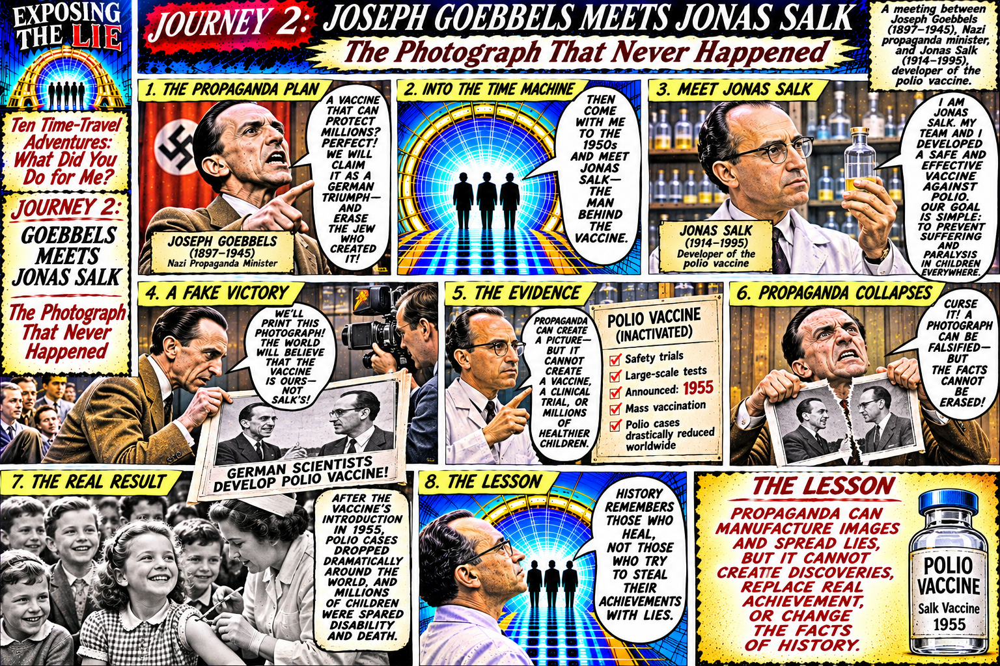
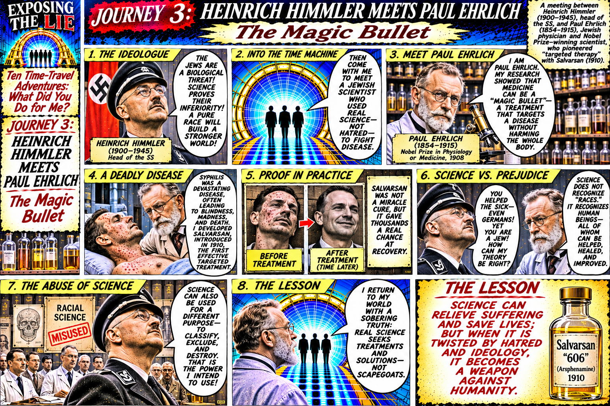
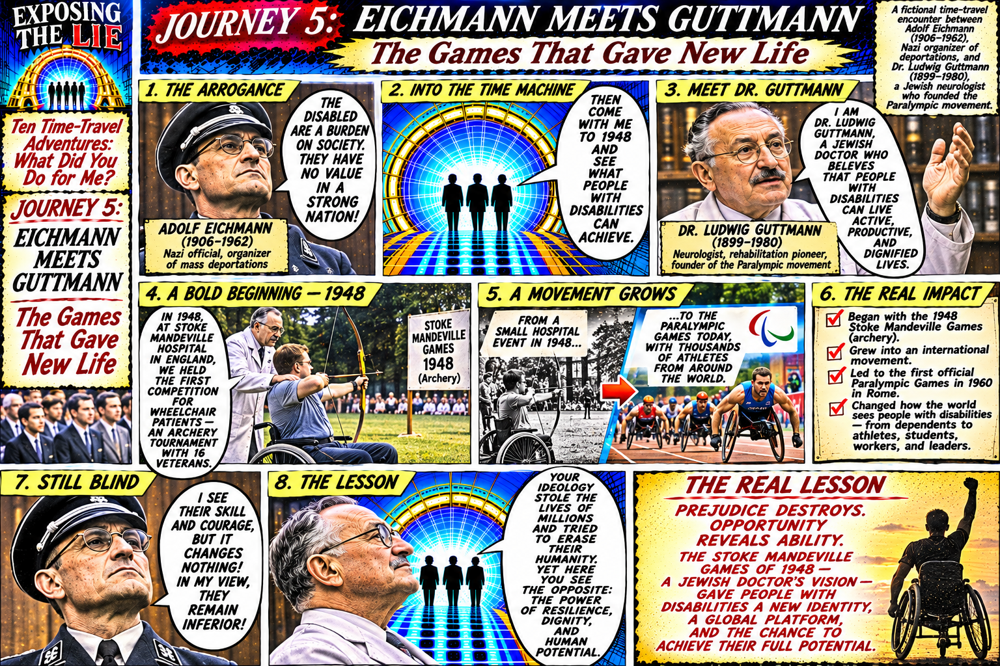
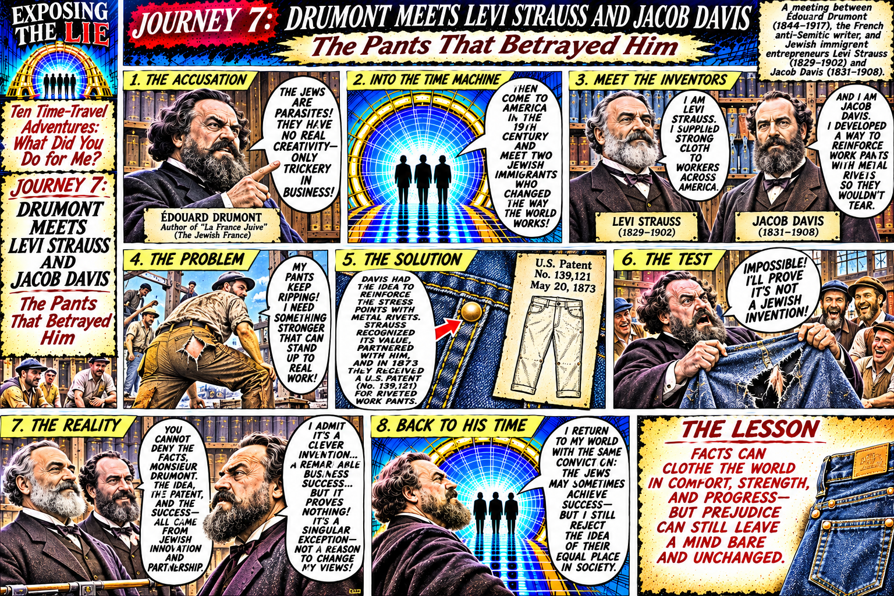
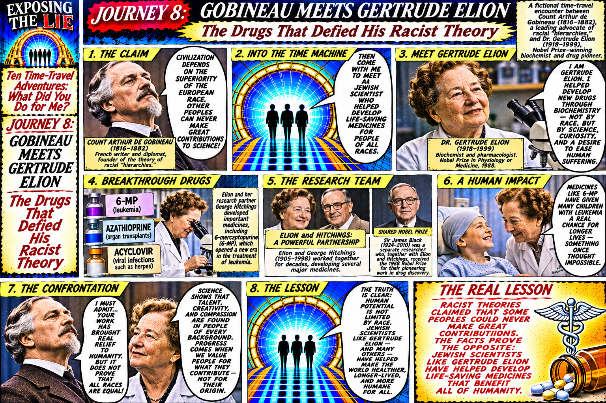
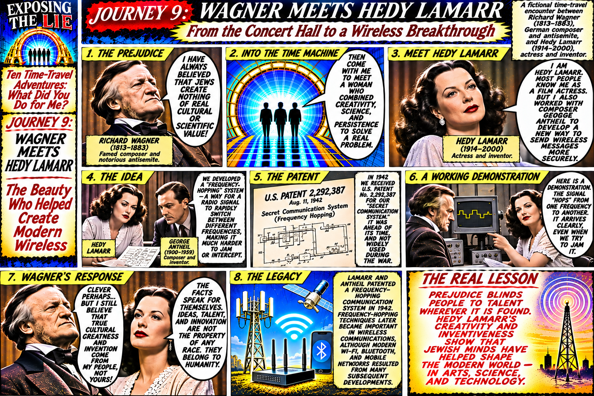

Exposing the Lie
The complete ten-page time-traveler collection, presented in reading order. The comic brings historical antisemites face to face with Jewish people whose achievements expose their lies.





